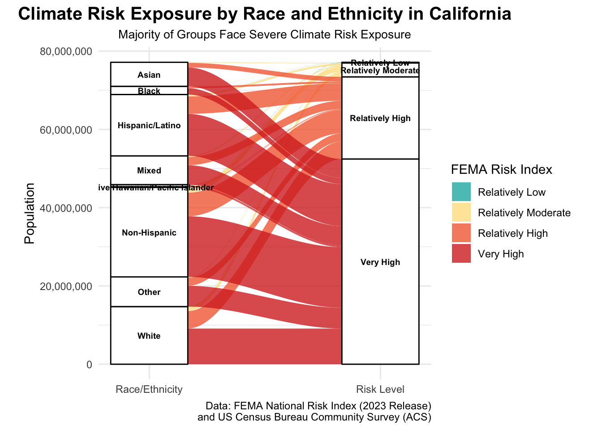
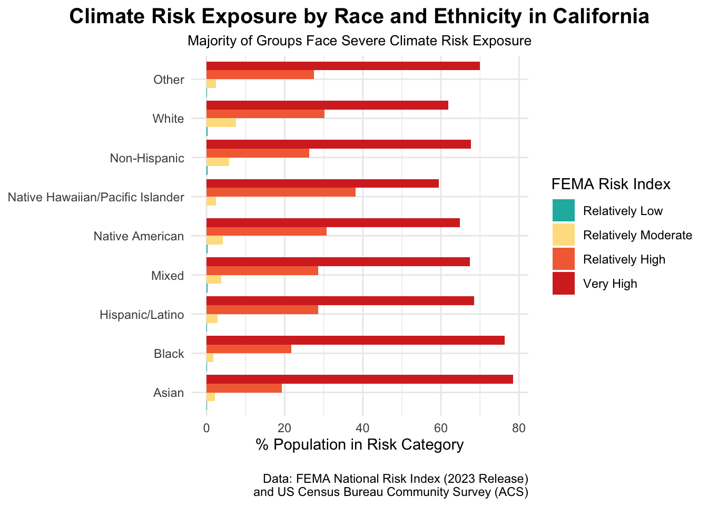

##~~~~~~~~~~~~~~~~~~~~~~~~~~~~~~~~~~~~~~~~~~~~~~~~~~~~~~~~~~~~~~~~~~~~~~~~~~~~~~
## setup ----
##~~~~~~~~~~~~~~~~~~~~~~~~~~~~~~~~~~~~~~~~~~~~~~~~~~~~~~~~~~~~~~~~~~~~~~~~~~~~~~
#..........................load packages.........................
library(tidyverse)
library(here)
library(ggplot2)
library(janitor)
library(ARTofR)
library(ggtext)
library(tidycensus)
library(janitor)
library(ggalluvial)
#..........................import data...........................
# ________Import ACS data________
#....Step 1a: see all available ACS variables + descriptions.....
#acs_vars <- tidycensus::load_variables(year = 2023, dataset = "acs1")
#..............Step 1b: import race & ethnicity data.............
# race_ethnicity <- tidycensus::get_acs(
# geography = "county",
# survey = "acs1",
# # Define variables I may use
# variables = c("B01003_001", "B02001_002", "B02001_003",
# "B02001_004", "B02001_005", "B02001_006",
# "B02001_007", "B02001_008", "B03002_012",
# "B03002_002"),
# state = "CA",
# year = 2023) |>
# # join variable descriptions
# dplyr::left_join(acs_vars, by = dplyr::join_by(variable == name))
#
# #.................Step 2: write ACS data to file.................
# readr::write_csv(race_ethnicity, here::here("data", "ACS-1yr-2023-county-race-ethnicity.csv"))
#..................Step 3: read in your CSV file.................
race_ethnicity <- readr::read_csv(here::here("data", "ACS-1yr-2023-county-race-ethnicity.csv"))
#________Import FEMA data_________
nri_df <- read_csv(here::here("data", "National_Risk_Index_Counties_807384124455672111.csv")) %>%
clean_names()Visualizing ACS Data
EDS 240 HW #3
HW #3: Visualizing FEMA NRI x ACS Data
Objective
In this assignment, we are tasked with answering the following question with our data visualization:
How does climate hazard risk exposure vary across racial / ethnic groups in California?
I accomplished this task with two visualizations 1) Alluvial diagram and 2) Dodge Bar Chart.
Data Wrangling
cleaning tasks: - str_remove() the name column (remove California; new column - new column called county_name - create new column county_pop w/ case_when (if label == ‘estimate!total’) - create new column race_ethnic w/ case_when -remove “estimatetotal!” from column - resulting race_ethnicity column should contain the following additional columns: county_name, county_pop, race_ethnic
#..........................Wrangle ACS Data ...........................
race_ethnicity_clean <- race_ethnicity %>%
# all columns in lower snack case
clean_names() %>%
# remove "County,California" from column because all data is from California
mutate(county_name = str_remove(name, " County, California"),
# Create total population of county column
tot_pop_county = if_else(label == "Estimate!!Total", estimate, NA),
# Create race_ethnicity column
race_ethnicity = if_else(
label != "Estimate!!Total",
str_remove(label, "Estimate!!Total:!!"),
NA
)) %>%
# Select only the columns you want
select(county_name, race_ethnicity, tot_pop_county, estimate)
#..........................Wrangle NRI Data ...........................
nri_3 <- nri_df %>%
# Filter for California
filter(state_name == "California") %>%
# Select columns interested in
select(county_name, population_2020, national_risk_index_score_composite, national_risk_index_rating_composite)
#..........................Join Data ...........................
nri_race <- full_join(race_ethnicity_clean, nri_3, by = "county_name")
#..........................Data prep..........................
nri_race_sankey <- nri_race %>%
# Reorder risk levels from low to high
mutate(national_risk_index_rating_composite = fct_relevel(
national_risk_index_rating_composite,
"Very Low",
"Relatively Low",
"Relatively Moderate",
"Relatively High",
"Very High"
)) %>%
# Sum population across all counties for each race/ethnicity and risk level
group_by(race_ethnicity, national_risk_index_rating_composite) %>%
summarize(pop_risk_category = sum(estimate, na.rm = TRUE),
.groups = "drop") %>% # Ungroup within summarize
# Calculate percentage of each racial/ethnic group in each risk category
group_by(race_ethnicity) %>%
mutate(
total_pop = sum(pop_risk_category),
pct_in_risk_category = pop_risk_category / total_pop * 100
) %>%
# Rename race/ethnicity column factors for simplified graphing
mutate(race_ethnicity = case_when(
race_ethnicity == "American Indian and Alaska Native alone" ~ "Native American",
race_ethnicity == "Black or African American alone" ~ "Black",
race_ethnicity == "Asian alone" ~ "Asian",
race_ethnicity == "White alone" ~ "White",
race_ethnicity == "Native Hawaiian and Other Pacific Islander alone" ~ "Native Hawaiian/Pacific Islander",
race_ethnicity == "Some Other Race alone" ~ "Other",
race_ethnicity == "Two or More Races:" ~ "Mixed",
race_ethnicity == "Not Hispanic or Latino:" ~ "Non-Hispanic",
race_ethnicity == "Hispanic or Latino:" ~ "Hispanic/Latino"))Build Visualization
Alluvial Diagram
#..........................Palette..........................
risk_color_pallette <- c(
"Relatively Low" = "#1BB6AFFF",
"Relatively Moderate" = "#fee090",
"Relatively High" = "#f46d43",
"Very High" = "#d73027"
)
#..........................Graph..........................
nri_race_sankey %>%
# Filter out NAs
filter(!is.na(race_ethnicity), !is.na(national_risk_index_rating_composite)) %>%
# Reorder by population
mutate(race_ethnicity = fct_reorder(race_ethnicity, total_pop, .desc = TRUE)) %>%
# Plot
ggplot(aes(axis1 = race_ethnicity,
axis2 = national_risk_index_rating_composite,
y = pop_risk_category)) +
geom_alluvium(aes(fill = national_risk_index_rating_composite),
alpha = 0.8,
curve_type = "cubic") + # Sankey type
scale_fill_manual(values = risk_color_pallette) + # Custom color pallette defined above
geom_stratum(width = 1/3) + # Width of each stratum
geom_text(stat = "stratum",
aes(label = after_stat(stratum)),
size = 2.5,
fontface = "bold",
check_overlap = TRUE) + # Make sure labels don't overlap
# Define box titles and width
scale_x_discrete(limits = c("Race/Ethnicity", "Risk Level"), expand = c(0.12, 0.1)) +
# Turn y axes into values wiht commas
scale_y_continuous(labels = scales::comma) +
labs(fill = "FEMA Risk Index",
y = "Population",
x = NULL, # Remove x axis title
title = "Climate Risk Exposure by Race and Ethnicity in California",
subtitle = "Majority of Groups Face Severe Climate Risk Exposure",
caption = "Data: FEMA National Risk Index (2023 Release)\nand US Census Bureau Community Survey (ACS)") +
# Theme adjustments
theme_minimal() +
theme(aspect.ratio = 1,
plot.title = element_text(hjust = 0.5, size = 15, lwd = 1.5, face = "bold"),
plot.subtitle = element_text(hjust = 0.5, size = 10),
plot.caption = element_text(hjust = 1)) 
Dodge Bar Chart
nri_race_sankey %>%
# Filter out NAs
filter(!is.na(race_ethnicity), !is.na(national_risk_index_rating_composite)) %>%
# Plot
ggplot(aes(x = reorder(race_ethnicity,pct_in_risk_category),
y = pct_in_risk_category,
fill = national_risk_index_rating_composite)) +
geom_col(position = "dodge") +
scale_fill_manual(values = risk_color_pallette) +
# FLip x and y
coord_flip() +
labs(fill = "FEMA Risk Index",
y = "% Population in Risk Category",
x = "Race/ethnicity",
title = "Climate Risk Exposure by Race and Ethnicity in California",
subtitle = "Majority of Groups Face Severe Climate Risk Exposure",
caption = "Data: FEMA National Risk Index (2023 Release)\nand US Census Bureau Community Survey (ACS)") +
# Theme adjustments
theme_minimal() +
theme(axis.title.y = element_blank(),
plot.title = element_text(hjust = 0.5, size = 15, lwd = 1.5, face = "bold"),
plot.subtitle = element_text(hjust = 0.5, size = 10),
plot.caption = element_text(margin = margin(t = 15))) # Adjust margin spacing
Questions
1. What are your variables of interest and what kinds of data (e.g. numeric, categorical, ordered, etc.) are they (a bullet point list is fine)?
My variables of interest were race_ethnicity (categorical), pop_risk_category which is the population of each ethnic or racial group within national_risk_index_composite (categorical). I also created pct_in_risk_category which was the percentage of that population in the risk (numeric).
2. How did you decide which type of graphic form was best suited for answering the question? What alternative graphic forms could you have used instead? Why did you settle on this particular graphic form?
I chose to represent this data with a bar chart because it most clearly shows the trends within demographics. Due to the high proportion of each racial and ethnic group being high risk, I chose to use dodge bar chart to show the large difference between high risk and moderately risk in each group.
3. Summarize your main finding in no more than two sentences.
All demographic groups across California face high risk to climate hazards, particularly Black, Asian, and other race/ethnic groups.
4. What modifications did you make to this visualization to make it more easily readable? Modifications made to make this graph more interpretable was using coord_flip for the busy x axes labels, and used position = dodge to show the large difference between high risk and moderatley risk.
5. Is there anything you wanted to implement, but didn’t know how? If so, please describe. For my alluvial diagram, I wanted to change the overlapping of text. I tried check_overlap = TRUE within the geom_text() argument, however that did not work. I also tried to rewrite the columns so that they do not overlap with case_when(), however this issue persists because the size of axis1 stratum (population) is small for native american and pacific islander. I tried working with other packages, including {alluvial}, {ggsankey}, and {networkD3}. The last two are considered sankey diagrams, which differs from the alluvial diagram. Although I tried all the other packages, I prefer the {ggalluvial} package because it is an extension of ggplot2 and you are able to make alterations in the same way you do any ggplot. I would love to keep work shopping this graph!